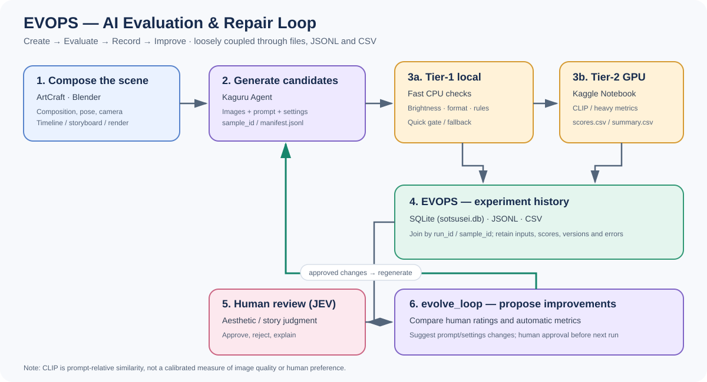

要求 → 分析 → 設計 → 実装 → マニュアル → 実行イメージ。
10/28（水）提出分。 UML は分析与設計で 2 段階に分けて書く。
| # | 提出物 | 本ファイル | 済 |
|---|---|---|---|
| 1 | 要求モデル（ユースケース図 ＋ ユースケース仕様） | p.11–14 | |
| 2 | 分析モデル（ロバストネス図 ＋ シーケンス図） | p.15–17 | |
| 3 | 設計モデル（クラス図・シーケンス図） | p.18–20 | |
| 4 | プログラム | p.21–22 | |
| 5 | 操作マニュアル（実装方法・操作方法） | p.23 | |
| 6 | 実行イメージ（実行画面のスクリーンショット） | p.24 |
kyoyu/python/総合演習(卒業制作)/<各自>/ ├── 総合演習_<氏名>_<システム名>.html ├── figures/ # UML 図の原本（.drawio / .puml） ├── src/ # プログラム（p.21 の構成） └── README.md # 実行方法
図の原本は必ず同梱する。先生から「図の出典は？」と聞かれる。
index.html のままだと内容が分からないので
総合演習_<氏名>_<システム名>.html にリネームして提出する。
| アクター | 種別 | 目的（システムから得られる価値） |
|---|---|---|
| AI画像生成クリエイター | 人 | 意図通りの画像を少ない試行回数で得たい |
| VLM評価モデル | 外部システム | 生成画像を自動的に評価する |
| Blender | 外部システム | プロンプトから画像／SVGをレンダリングする |
| 時刻 | 時間 | バッチ処理・後始末（オプション） |
| 問い | 答え |
|---|---|
| 誰が（何が）使うか | AI画像生成クリエイター |
| どこから使うか | デスクトップ（ローカル）アプリ |
| 自動で動くか | 評価・修復ループは自動実行 |
| システム名は何か | AI評価・修復ループ |
原則：「入力値の検証」と「表示」はシステム内。利用者本人の手作業は外。
顧客が直接注文する場合 → 境界は「注文を受ける」。
受付係が処理する場合 → 境界は「受付処理」。Swing などで自動化するなら内側。
→ 自分のシステムで同じ検討を 1 度書く。
毎回必ず実行される共通処理。必須の共通処理を呼び出す側から、含まれる UC へ破線矢印。
条件によって条件付きで実行。追加動作から、拡張される基本 UC へ破線矢印。
主語は「動詞 ＋ 目的語」（例「検索する」「通知する」）。名詞・形容詞は不可。
| ユースケース名 | |
|---|---|
| アクター | |
| 概要 | |
| 前提条件 | |
| 事後条件 | |
| トリガ |
| 《include》 | |
|---|---|
| 《extend》 | |
| 優先度 | |
| 利用頻度 |
番号は「分岐番号.内の連番」（例 4.1.2）にする。例外フローと対応させる。
| No | ユースケース名 | 主アクター | 概要・完了条件 | 優先度 | 関連 |
|---|---|---|---|---|---|
| UC1 | 画像を生成する | AI画像生成クリエイター | 画像を生成し、成果物・設定・実行IDを保存する。 | 1 | UC2を後続実行 |
| UC2 | 画像を評価する | クリエイター／VLM評価モデル | 評価条件に基づくスコア・根拠・評価器版を保存する。 | 1 | UC1の後続処理 |
| UC3 | 修復案を作成する | AI画像生成クリエイター | 評価結果から変更候補・理由・影響を提示する。 | 1 | 問題がある場合の拡張候補 |
| UC4 | 履歴を参照する | AI画像生成クリエイター | 過去の生成・評価・修復履歴と条件を確認する。 | 2 | 独立した利用目的 |
| UC5 | レポートを出力する | AI画像生成クリエイター | 画像・条件・評価・採否を比較可能な形式で出力する。 | 2 | 選択した履歴を利用可能 |
| UC6 | 評価条件を設定する | AI画像生成クリエイター | 評価観点・重み・閾値・評価器を設定し、版を記録する。 | 2 | UC2が参照 |
前提：生成画像と実行IDがあり、有効な評価条件・評価器を選べる。
例外：画像欠損や評価器エラーは未評価として記録し、合格扱いにしない。
前提：改善対象と評価根拠を特定できる。
例外：根拠不足や評価不一致がある場合は、自動修復を確定せず確認を求める。
生成フォームと結果表示。入力、進捗、成功・失敗状態を利用者に伝える。
入力検証、実行ID発行、エンジン呼び出し、処理状態と例外を調整する。
生成条件、実行履歴、成果物参照、ログを実行IDに紐づけて保存する。
| 区分 | クラス名 | 責務 | 主な属性 | 他クラスとの関連 |
|---|---|---|---|---|
| 境界 | 開始メニュー | |||
| 境界 | 入力デバイス | |||
| 境界 | メッセージ表示 | |||
| 制御 | ○○制御 | |||
| エンティティ | 利用者情報 | |||
| エンティティ | ○○台帳 | |||
| エンティティ | 履歴 | |||
統合手順：① 各手法の結果を並べる → ② 同義語・類語を解決して統一 → ③ 手法ごとの差異から不十分な箇所を特定 → ④ CRC のコラボレータに関連を設定 → ⑤ 名称を命名規則に合わせる。
| 使い分けている言葉 | 統一後 |
|---|---|
上記観点で見つかったクラス：
domain：エンティティだけ。単体でテストできる。repository：永続化の読み書き。service：ユースケース 1 本ずつ。ui：最後に画面を載せる。domain から ui を参照しない。service が ui のクラスを生成しない。domain に持ち込まない。snake_case／クラスは PascalCasemain.py を除く）−alt／opt フレームで囲む（p.13 の例外フローに対応）。# kyoyu/python/総合演習(卒業制作)/<各自>/ ├── main.py # エントリポイント（起動のみ） ├── domain/ │ ├── __init__.py │ ├── record.py # 《entity》台帳項目 │ ├── ledger.py # 《entity》台帳（集合） │ └── user.py # 《entity》利用者情報 ├── service/ │ ├── __init__.py │ ├── record_service.py # 《control》登録／検索 │ └── user_service.py # 《control》ログイン ├── repository/ │ ├── __init__.py │ ├── base.py # «interface» Repository │ ├── json_repository.py # JSON での実装 │ └── memory_repository.py # メモリ実装（テスト用） ├── ui/ │ ├── __init__.py │ ├── main_window.py # 《boundary》Tk 画面 │ └── message.py # 《boundary》通知 ├── tests/ │ ├── __init__.py │ └── test_record.py # unittest ├── figures/ # UML 図の原本 ├── config.json # 設定（DB パスなど） └── README.md
from ui.main_window import MainWindow def main() -> None: root = MainWindow() root.mainloop() if __name__ == "__main__": main()
ロジックを一切書かない。起動と終了だけ。
| 対象 | 規則 |
|---|---|
| モジュール・関数・変数 | snake_case |
| クラス | PascalCase |
| 定数 | UPPER_SNAKE |
| 非公開メンバ | _name |
| .boilerplate | コメント・空行-GFP を意識 |
record.add() は GFP、process(data) は GFP でない。
関数名は動詞を主語より前に置く。
from dataclasses import dataclass from datetime import datetime @dataclass class Record: """台帳の 1 項目を表すエンティティ。""" _id: int _name: str _updated: datetime def __post_init__(self) -> None: self._updated = datetime.now() @property def name(self) -> str: return self._name @name.setter def name(self, value: str) -> None: if not value.strip(): raise ValueError("名称は必須です") self._name = value
from domain.record import Record from repository.base import RecordRepository class RecordService: """登録・検索のユースケースを実行する。""" def __init__(self, repo: RecordRepository) -> None: self._repo = repo def register(self, name: str) -> Record: record = Record(_id=self._repo.next_id(), _name=name) self._repo.save(record) return record def search(self, keyword: str) -> list[Record]: records = self._repo.all() return [r for r in records if keyword in r.name]
import unittest from domain.record import Record class TestRecord(unittest.TestCase): def test_name_is_required(self): with self.assertRaises(ValueError): Record(_id=1, _name=" ") def test_name_can_be_set(self): r = Record(_id=1, _name="初期") r.name = "変更後" self.assertEqual(r.name, "変更後") if __name__ == "__main__": unittest.main()
実行：python -m unittest discover -s tests -v
| 図（p.19–20） | 実装 |
|---|---|
| «interface» ○○Repository | repository/base.py |
| Record — 属性・操作 | domain/record.py |
| ○○制御 — 登録／検索 | service/record_service.py |
| MainWindow — on_submit | ui/main_window.py |
| メッセージ 5 : 入力受付 | MainWindow._on_submit |
発表では：「設計図のどのクラスをどのファイルに書いたか」を 1 枚で説明できるようにしておく。
| 項目 | 内容 |
|---|---|
| OS | （Windows 11 / Ubuntu 24.04 など） |
| Python | （例 3.12.x） |
| ライブラリ | （標準のみなら「標準ライブラリのみ」） |
| その他 |
# 1) リポジトリの配置 cd ~/kyoyu/python/総合演習\(卒業制作\)/<各自> # 2) 仮想環境（任意） python -m venv .venv source .venv/bin/activate # Windows: .venv\Scripts\activate # 3) 起動 python main.py
| 要素 | 説明 |
|---|---|
説明文は「〜できる」の形で。操作以外の説明は書かない。
| 症状 | 対処 |
|---|---|
| ModuleNotFoundError | main.py と同じディレクトリで実行 |
01_main.png の連番figures/ から読む「まず起動します」（SHOT 1 を指す）→「操作します」→「結果です」（SHOT 2）。指差しを言葉にしてから指を動かしながら進める。
{
"sample_id": "stable-id",
"asset_uri": "dataset-relative/path",
"human_score": 0.0,
"split": "train",
"schema_version": "1"
}
学習時は train / validation を分離する。人間評価がないサンプルは教師あり学習に混ぜない。個人情報や秘密情報はアップロードしない。

各段階を直接結合せず、安定したIDとファイル形式で接続する。
{
"schema_version": "1",
"run_id": "run-001",
"sample_id": "image-001",
"asset_uri": "images/image-001.png",
"concept": "target concept",
"prompt": "generation prompt",
"generator": "kaguru-agent",
"human_score": null,
"clip_score": null
}